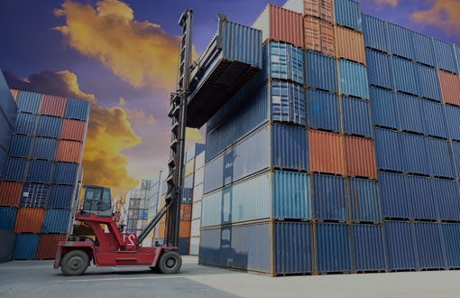
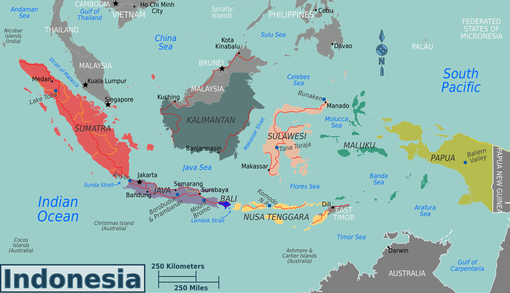

Mitra perjalanan yang dapat diandalkan.
Menjadi mitra angkutan darat yang mendukung kebutuhan bisnis di Indonesia.
Sejak 1985
Sejarah operasional Lookman Djaja dimulai pada 1985 dari kebutuhan angkutan darat yang terukur dan konsisten.
Sejak itu, pengalaman pengiriman menjadi dasar dalam melayani kargo, barang konsumen, dan distribusi bisnis dengan pilihan armada yang disesuaikan terhadap muatan dan perjalanan.
Perkembangan layanan mengikuti kebutuhan pengiriman: mulai dari penentuan rute dan kapasitas hingga proses bongkar-muat yang lebih terarah.
Visi Misi
Menjadi mitra angkutan darat yang terarah dan dapat diandalkan.

Menjadi mitra angkutan darat yang mendukung kebutuhan bisnis di Indonesia.
Menyusun muatan, rute, armada, dan jadwal agar perjalanan lebih siap dan terkoordinasi.
Prinsip operasional
Kapasitas, rute, dan kontrol menjadi dasar operasional.
Armada dibahas berdasarkan jenis, volume, dan berat muatan.
Asal, tujuan, dan jadwal menjadi bagian dari perencanaan.
Informasi operasional membantu pengiriman tetap terkoordinasi.
Klien demo
Contoh logo klien untuk kebutuhan demo website. Nama dan identitas berikut bersifat fiktif.
Catatan: seluruh logo dan nama klien pada section ini adalah contoh fiktif untuk kebutuhan presentasi demo.
Cakupan layanan
Sumatera, Jawa, Bali, dan NTB untuk kebutuhan perjalanan darat.

SumateraJawaBaliNTBPerjalanan lintas pulau untuk kebutuhan distribusi dan kargo.
Koridor utama untuk pergerakan barang antarkota.
Pengiriman menuju area bisnis dan distribusi regional.
Cakupan rute lanjutan sesuai kebutuhan perjalanan.
Mulai percakapan
Ceritakan rute, jenis muatan, dan jadwal Anda. Kami bantu menyiapkan pilihan perjalanan.